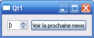

Bienvenue dans le mini-tutoriel pour apprendre à utiliser QtXml qui permet de pouvoir utiliser des données XML dans une application Qt. Nous apprendrons dans ce chapitre à utiliser le XML via DOM !
QtXml est un module qui permet d'utiliser des données XML dans un programme Qt. Pour que le compilateur puisse savoir que vous voulez utiliser QtXml, il vous faut rajouter dans le fichier une extension .pro :
QT += xml
Puis il ne nous reste plus qu'à préciser au compilateur que nous voulons utiliser le module en ajoutant un include, celui qui suit :
#include <QtXml>
Cet include, comme vous avez dû le remarquer, permet d'utiliser le module dans son code. Maintenant, je vais vous donner le code requis pour chaque fichier.
#ifndef XML_DOM
#define XML_DOM
#include <QtGui>
#include <QtXml>
#include <QWidget>
class Xml_Dom : public QWidget
{
public:
Xml_Dom();
~Xml_Dom();
// On rajoutera des variables et des méthodes après.
};
#endif
Xml_Dom.cpp
#include "Xml_Dom.h"
#include <iostream>
using namespace std;
Xml_Dom::Xml_Dom() : QWidget()
{
/*/////////////////////////////////////////////////////////////////////*/
/* On définira ici le document XML et les actions que l'on va effectuer */
/*//////////////////////////EN PREMIER LIEU/////////////////////////////*/
/*/////////////////////////////////////////////////////////////////////*/
}
Xml_Dom::~Xml_Dom()
{
}
Afin de pouvoir utiliser du XML, nous allons utiliser un objet DOM (Document Objet Model). Il faut donc définir un objet de ce type qui nous permettra d'agir sur le document XML. Afin de créer cet objet, il nous suffit d'utiliser la classe QDomDocument. Il faut la définir comme ceci :
QDomDocument *dom = new QDomDocument("Nom de votre document QDomDocument"); // Création de l'objet DOM
Cette façon est la plus simple d'instancier l'objet QDomDocument. Il en existe d'autres qui ne servent pas pour le moment. Il nous faut maintenant ouvrir le document XML ; pour cela, on utilise alors le code suivant :
QFile xml_doc("nom_du_document_xml.xml");// On choisit le fichier contenant les informations XML.
Ensuite, pour savoir si le fichier a bien été ouvert en lecture seule, on écrit :
if(!xml_doc.open(QIODevice::ReadOnly))// Si l'on n'arrive pas à ouvrir le fichier XML.
{
QMessageBox::warning(this,"Erreur à l'ouverture du document XML","Le document XML n'a pas pu être ouvert. Vérifiez que le nom est le bon et que le document est bien placé");
return;
}
Enfin, il faut attribuer le fichier XML à l'objet QDomDocument. On fait donc :
dom->setContent(&xml_doc);
Pour aller plus vite, on peut directement tester ce code. On écrira donc :
if (!dom->setContent(&xml_doc)) // Si l'on n'arrive pas à associer le fichier XML à l'objet DOM.
{
xml_doc.close();
QMessageBox::warning(this,"Erreur à l'ouverture du document XML","Le document XML n'a pas pu être attribué à l'objet QDomDocument.");
return;
}
L'objet QDomDocument est maintenant créé ! Si vous avez bien suivi, vous devriez avoir le code suivant :
QDomDocument *dom = new QDomDocument("mon_xml");
QFile xml_doc("xml_doc.xml");// On choisit le fichier contenant les informations XML.
if(!xml_doc.open(QIODevice::ReadOnly))// Si l'on n'arrive pas à ouvrir le fichier XML.
{
QMessageBox::warning(this,"Erreur à l'ouverture du document XML","Le document XML n'a pas pu être ouvert. Vérifiez que le nom est le bon et que le document est bien placé");
return;
}
if (!dom->setContent(&xml_doc)) // Si l'on n'arrive pas à associer le fichier XML à l'objet DOM.
{
xml_doc.close();
QMessageBox::warning(this,"Erreur à l'ouverture du document XML","Le document XML n'a pas pu être attribué à l'objet QDomDocument.");
return;
}
xml_doc.close(); // Dans tous les cas, on doit fermer le document XML : on n'en a plus besoin, tout est compris dans l'objet DOM.
Vous n'avez qu'à placer ce code dans le constructeur de la classe POUR L'INSTANT.
Nous sommes maintenant prêts à utiliser l'objet que nous venons de créer !
Maintenant que nous avons créé notre objet DOM, nous pouvons essayer de récupérer les données XML pour pouvoir les utiliser. Nous allons donc utiliser un objet QDomElement afin de récupérer tous les éléments du document que nous voulons étudier. Pour ce faire, on doit effectuer :
QDomElement dom_element = dom.documentElement();
Explication :
1 : on crée un objet QDomElement appelé dom_element ;
2 : on lui donne comme valeur tout le document XML : l'objet QDomDocument récupère le XML mais ne sait pas l'analyser !
On essaye maintenant d'obtenir le premier nœud afin de récupérer les autres et aussi les balises. Pour faire cela, on va utiliser un objet QDomNode. On effectue donc :
QDomNode noeud = dom_element.firstChild();
Explication :
1 : on crée un objet QDomNode appelé nœud ;
2 : on lui donne comme valeur le premier nœud que dom_element a. Ce nœud contiendra tous les autres nœuds présents dans le document XML.
Et maintenant, on regarde ce que l'on trouve ! Imaginons un fichier XML comme ceci :
<?xml version="1.0" encoding="ISO-8859-1"?>
<info_de_TF1>
<information>Un avion s'est crashé dans l'océan.</information>
<information>Une femme a gagné à l'Euro Millions.</information>
</info_de_TF1>
On va effectuer une boucle qui va nous donner des résultats tant qu'il y en a. Nous allons donc faire :
while(!noeud.isNull())// Tant que le nœud n'est pas vide.
{
}
On va ensuite créer un nouvel objet (QDomElement) qui contiendra les éléments courants (ceux que l'on va analyser). On va donc écrire dans le while :
QDomElement element = noeud.toElement(); // On utilise cette propriété afin de transformer le nœud en éléments. Cela nous permet aussi de récupérer l'élément ou nœud courant.
On vérifie ensuite si le résultat n'est pas vide. Devinez... quelle méthode allons-nous utiliser ?
isNull() :D ! Je suis sûr que vous aviez trouvé !
On va donc écrire :
if(!element.isNull())
{
// On indique le code à effectuer ici.
}
Maintenant, on va indiquer ce que l'on veut faire. Si nous voulons afficher le nom de la balise, nous n'avons qu'à faire element.tagName(). Mais ce n'est pas le plus intéressant. Nous verrons toutes les méthodes de programmation possibles dans la prochaine sous-partie. Nous allons quand même rester sur le nom de la balise. Donc, pour pouvoir afficher le nom de la balise dans un QMessageBox, on va mettre comme code :
QMessageBox::information(this, "Nom de la balise", "Le nom de la balise est :" + element.tagName());
Explication :
1 : on crée un objet QMessageBox::information qui affichera "Le nom de la balise est" plus le nom de la balise courante ;
2 : on utilise la méthode tagName() afin de pouvoir récupérer le nom de la balise.
Puis enfin, on demande à nœud de prendre le prochain résultat qu'il trouve. Insérer dans le while mais après le if :
noeud = noeud.nextSibling(); // Ce code permet d'aller à l'élément suivant.
Nous n'avons plus qu'à insérer ce code dans le if qui est lui-même dans le while ! Donc si vous avez tout bien retenu, vous devriez avoir le code complet suivant :
Xml_Dom.cpp
#include "Xml_Dom.h"
#include <iostream>
using namespace std;
Xml_Dom::Xml_Dom() : QWidget()
{
QDomDocument dom("mon_xml");
QFile xml_doc("xml_doc.xml");
if(!xml_doc.open(QIODevice::ReadOnly))
{
QMessageBox::warning(this, "Erreur à l'ouverture du document XML", "Le document XML n'a pas pu être ouvert. Vérifiez que le nom est le bon et que le document est bien placé");
return;
}
if (!dom.setContent(&xml_doc))
{
xml_doc.close();
QMessageBox::warning(this, "Erreur à l'ouverture du document XML", "Le document XML n'a pas pu être attribué à l'objet QDomDocument.");
return;
}
QDomElement dom_element = dom.documentElement();
QDomNode noeud = dom_element.firstChild();
while(!noeud.isNull())
{
if(!dom_element.isNull())
QMessageBox::information(this, "Nom de la balise", "Le nom de la balise est " + dom_element.tagName());
noeud = noeud.nextSibling();
}
}
Xml_Dom::~Xml_Dom()
{
}
Et voilà votre premier document DOM avec Qt réussi ! Mais il faudrait quand même préciser d'autres choses sur ce module qu'est QtXml !
Nous avons écrit un bon code juste au-dessus, mais il ne sert à rien dans cet état : les utilisateurs se fichent pas mal de connaître le nom de la balise. C'est pourquoi nous allons voir les différentes méthodes pour récupérer les informations.
Les méthodes
Afin de trouver le texte ou d'autres choses dans le document XML, nous pouvons avoir recours aux méthodes de la classe QDomElement. La première est, sans aucun doute, la méthode text. Elle s'écrit element.text() et sert à récupérer le texte situé à l'intérieur d'une balise (avec le document XML fourni plus haut, cela pourrait nous donner : une femme a gagné à l'Euro Millions). Elle ne demande aucun paramètre.
Considérons maintenant le code XML suivant :
<?xml version="1.0" encoding="ISO-8859-1"?>
<info_de_TF1>
<information id="0" value="Un avion s'est craché dans l'océan" />
<information id="1" value="Une femme a gagné à l'Euro Million" />
</info_de_TF1>
Si vous voulez trouver la valeur d'un des attributs d'une balise, il vous suffit d'utiliser la méthode attribute. Son prototype est :
on recherche dans element si une balise a un attribut id (dans cet exemple) ;
si l'attribut n'est pas trouvé, on renvoie le deuxième argument, ici : 0. Cet argument est facultatif.
Une autre méthode utilisée est la méthode attributeNode(). Son prototype est :
QDomAttr QDomElement::attributeNode(const QString & name )
Cette fonction permet de donner la valeur d'un attribut (name). Elle renvoie 0 si l'attribut n'existe pas.
Il existe bien d'autres méthodes, mais elles ne seront pas utiles ici. Vous pouvez aller les voir sur la doc de la bibliothèque QtXml (allez voir l'objet QDomElement).
Imaginons que nous voulions afficher une information en fonction de son ID, il nous faudrait utiliser attribute (ou attributeNode si vous voulez). Comme nous allons le faire :-° , il nous suffira de tester si l'ID que l'on récupère est égal à notre ID précisé. On utilisera aussi cette fonction afin d'afficher l'information.
Créez une fenêtre et mettez le code suivant dans le constructeur de la classe Xml_Dom :
QSpinBox *id_demand = new QSpinBox(this);
QPushButton *open = new QPushButton("Voir la prochaine news", this);
QHBoxLayout *layout = new QHBoxLayout();
layout->addWidget(demand);
layout->addWidget(open);
setLayout(layout);
Au final, pour l'instant, vous devriez avoir une interface comme celle-ci :

Maintenant, nous allons maintenant établir les connections. Toujours dans le constructeur, rajoutez :
Comme vous pouvez le voir, nous allons utiliser des SLOTS personnalisés. L'un servira à changer la valeur d'une variable qui sera notre ID demandé. L'autre ouvrira le document DOM et agira dessus.
Occupons-nous, dans un premier temps, de l'actualisation de notre variable qui changera. En un premier lieu, vous allez remplacer votre fichier Xml_Dom.h par ce code :
Ce code nous donne les variables nécessaires ainsi que le constructeur, le destructeur et les SLOTS.
On peut voir que la variable qui va nous donner l'id s'appelle ids. Ce sera celle-là qui sera changée. Rajoutez maintenant dans votre constructeur :
ids = 0; // On initialise ids à 0.
Nous allons maintenant voir le SLOT nommé change. Il est appelé quand le texte de id_demand est modifié. On va donc mettre ce texte dans une nouvelle variable. Voici le code de notre fonction :
Maintenant que l'on a défini ids, on va pouvoir exécuter des opérations sur le document DOM. Créez la fonction Xml_Dom::openDom() comme ceci :
void Xml_Dom::openDom()
{
QDomDocument dom("mon_xml");
QFile file("xml_doc.xml");
if (!file.open(QIODevice::ReadOnly))
return;
if (!dom.setContent(&file)) {
file.close();
return;
}
file.close();
QDomElement docElem = dom.documentElement();
QDomNode n = docElem.firstChild();
while(!n.isNull())
{
QDomElement e = n.toElement();
// C'est ici que l'on va marquer le code
n = n.nextSibling();
}
}
On va maintenant rajouter ce qui va nous permettre de vérifier si l'id demandé est égal à ids. Pour cela, on va chercher l'attribut id. Comme ids est un int, on va aussi utiliser la fonction toInt(). Le code de test sera donc :
if(element.attribute("id").toInt() == ids)
QMessageBox::information(NULL, "Information", "La nouvelle news est :<br />" + e.attribute("value"));
Vous n'avez plus qu'à intégrer ce code entre la déclaration de element et l'autre partie du code, et celui-ci est fini !
On ajoute ensuite le code qui va nous permettre d'explorer le nouveau document DOM :
QDomElement docElem = dom.documentElement();
Nous pouvons maintenant écrire dans le document XML. Pour cela, on va d'abord passer par le document DOM. Créons un nouveau QDomElement et appelons-le write_elem. On va en même temps préciser comment s'appelle la balise.
QDomElement write_elem = dom.createElement("information"); // On crée un QDomElement qui a comme nom de balise "information".
Le code ci-dessus va « préparer » une balise XML en la créant et en lui donnant déjà un nom (ici : information). On va ensuite lui donner des attributs en utilisant setAttribute :
write_elem.setAttribute("id", 2); // L'attribut id vaudra 2.
write_elem.setAttribute("value", "L'inflation arrive en France"); // L'attribut value vaudra "L'inflation arrive en France".
Le code ci-dessus ajoute à l'élément write_elem deux attributs : id et value. Nous leur donnons une valeur prédéfinie mais ce n'est pas obligatoire. Enfin, on met tout dans le document DOM en passant par un QDomElement. On passera donc par docElem :
docElem.appendChild(write_elem);// On associe write_elem à domElem.
appendChild() est une fonction qui permet d'ajouter au document DOM un nœud ou un élément. Son prototype est :
Si vous avez bien suivi, vous devriez voir que le code ci-dessus ajoute l'élément write_elem au nœud docElem. Maintenant que notre balise XML est créée et intégrée au document DOM, nous pouvons actualiser le document XML. Pour ce faire, nous allons devoir écrire directement dans le fichier XML.
Pour pouvoir écrire dans le fichier XML, il faut donner une chaîne de caractères de type QString. On va donc devoir transformer un objet QDomDocument en QString. Voici le code pour créer un objet QString appelé write_elem qui reçoit un objet de type QDomDocument :
QString write_doc = doc.toString();
On utilise la méthode toString() pour transformer l'objet QDomDocument en QString. Cela vous donnera peut-être la même chose que si vous utilisez un cast.
Créez un objet de type QFile qui contiendra le fichier dans lequel écrire. Testez-le aussi :
QFile fichier("xml_doc.xml");
if(!fichier.open(QIODevice::WriteOnly))
{
fichier.close();
QMessageBox::critical(this,"Erreur","Impossible d'écrire dans le document XML");
return;
}
Ensuite, créez un objet de type QTextStream :
QTextStream stream(&fichier);
Puis nous allons enfin écrire dans notre fichier :
stream << write_doc; // On utilise l'opérateur << pour écrire write_doc dans le document XML.
Et à la fin de l'opération, on peut fermer le fichier :
fichier.close();
Voilà ce que donne le code. Avant le passage du programme : Le programme : Après le passage du programme :
Vous savez maintenant écrire dans un document XML !
Et voilà ! Ce n'était pas facile, mais j'ai réussi à vous apprendre comment utiliser le DOM avec Qt afin de pouvoir gérer du XML ! Créez des programmes qui contiennent cette technique pour vous entraîner ! Merci d'avoir suivi ce tutoriel !
{kind=link}
{kind=link}
{kind=link}